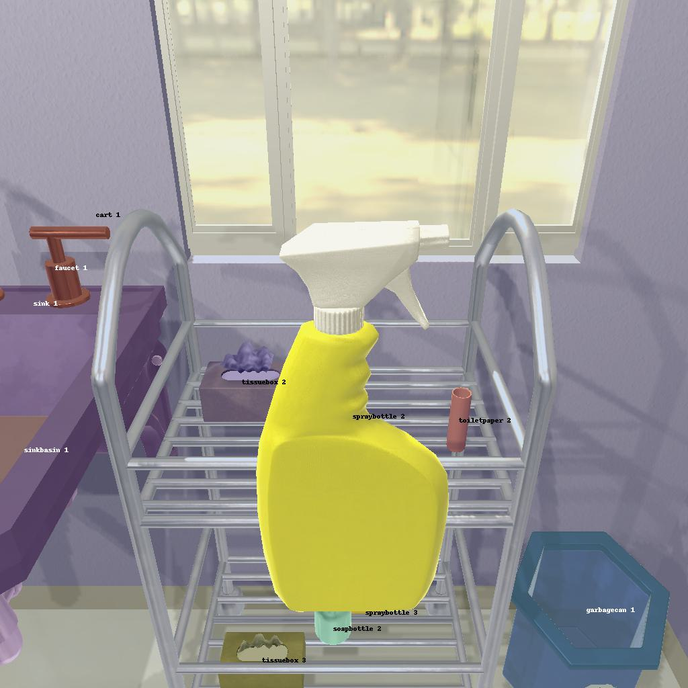

---------------------------------------------------------task: 28---------------------------------------------------------
--------------------------------------------------------------------------------------------------------------------------------------------------------------------
--------------------------------------------------------------------------------------------------------------------------------------------------------------------
Step:--------------------------------------------------------------------------17-------------------------------------------------------------------------------
----------------------------------------
VLM Prompt:
Image1:
Image2:
**Instruction**
1. Analyze the provided image to identify all visible household objects, focusing on those relevant to the task description "find two spraybottle and put them in toilet."
2. Use the analysis of the image and the task hint "The agent must find an object of the desired type, pick it up, find the correct location to place it, put it down there, then look for another object of the desired type, pick it up, return to previous location, and put it down there with the other object." to answer the question: what is the most reasonable action in the choices for the task description "find two spraybottle and put them in toilet"?
4. Decide and write the answer using the template: The answer is: (i): , where i is the real number. If there is no desired object in the image, search every place based on **Initial Observation** to find the object. And if no one is exactly correct, choose a similar answer.
**Initial Observation**
You are in the middle of a room. Looking quickly around you, you can see bathtub (1), bathtubbasin (1), cart (1), sink (1), garbagecan (1), sinkbasin (1), countertop (1), drawer (1-4), toilet (1), toiletpaperhanger (1)
**Answer Choices**
(1): go to bathtub 1
(2): go to bathtubbasin 1
(3): go to sink 1
(4): go to garbagecan 1
(5): go to sinkbasin 1
(6): go to countertop 1
(7): go to drawer 1
(8): go to drawer 2
(9): go to drawer 3
(10): go to drawer 4
(11): go to toilet 1
(12): go to toiletpaperhanger 1
(13): put spraybottle 2 in/on cart 1
(14): examine spraybottle 2
(15): examine cart 1
**Answer**
Let's think step by step by following the instructions.
----------------------------------------
----------------------------------------
Original Response:
First, we need to find two spray bottles. In the image, we can clearly see one spray bottle labeled as "spraybottle 2" on the cart. This means we have already found one of the spray bottles.
Next, we need to place this spray bottle in the toilet. However, before we do that, we should ensure we have the second spray bottle. Since the image only shows one spray bottle and there is no indication of the second one in the visible area, we should search the places listed in our initial observation.
The toilet is one of the places listed, so it's possible the second spray bottle might be there. Therefore, the most reasonable action would be to go to the toilet to look for the second spray bottle and also to place the first one there as per the task description.
The answer is: (11): go to toilet 1
----------------------------------------
----------------------------------------
>>> Refine Original VLM Response and Get Pure Action: go to toilet 1
----------------------------------------
-----------------------------------------------------------------
Running time: 9.066755294799805 seconds
Total Money: 14.264160000000004
-----------------------------------------------------------------
-----------------------------------------------------------------
Text Observation:You arrive at loc 11. On the toilet 1, you see a showerdoor 1, a spraybottle 1, and a soapbottle 1.
-----------------------------------------------------------------
UNSUCCEED